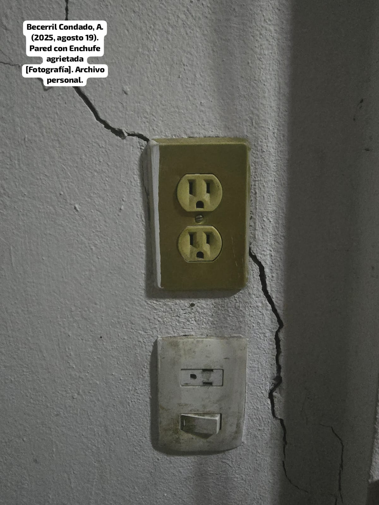
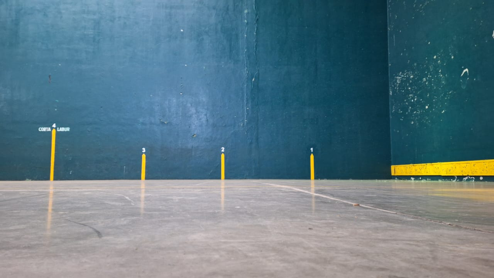
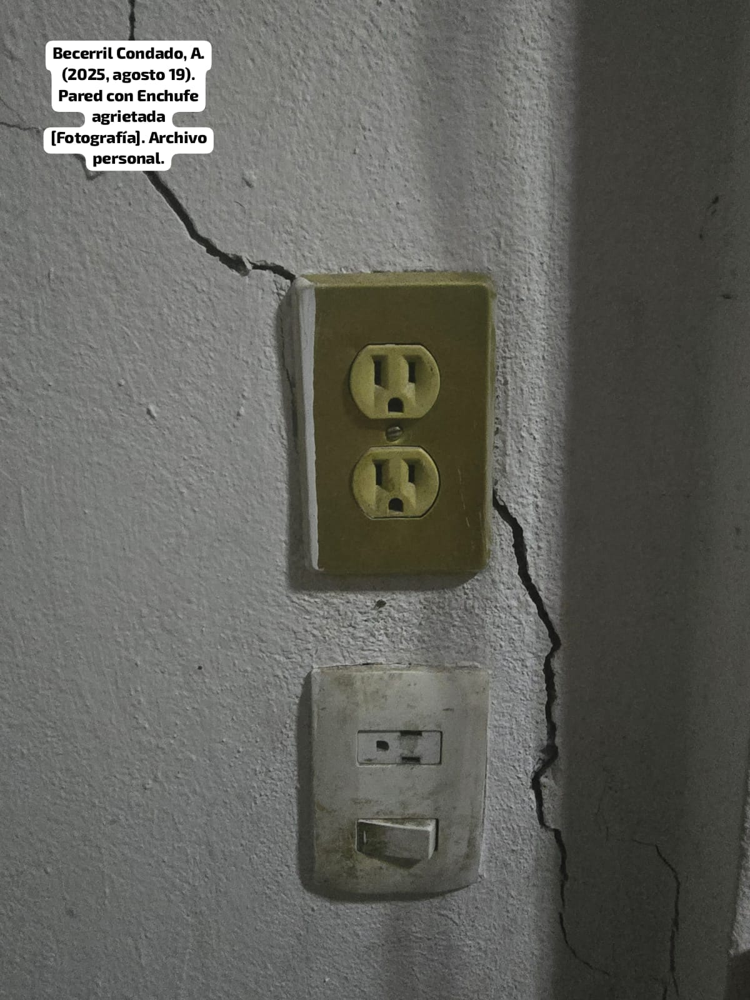
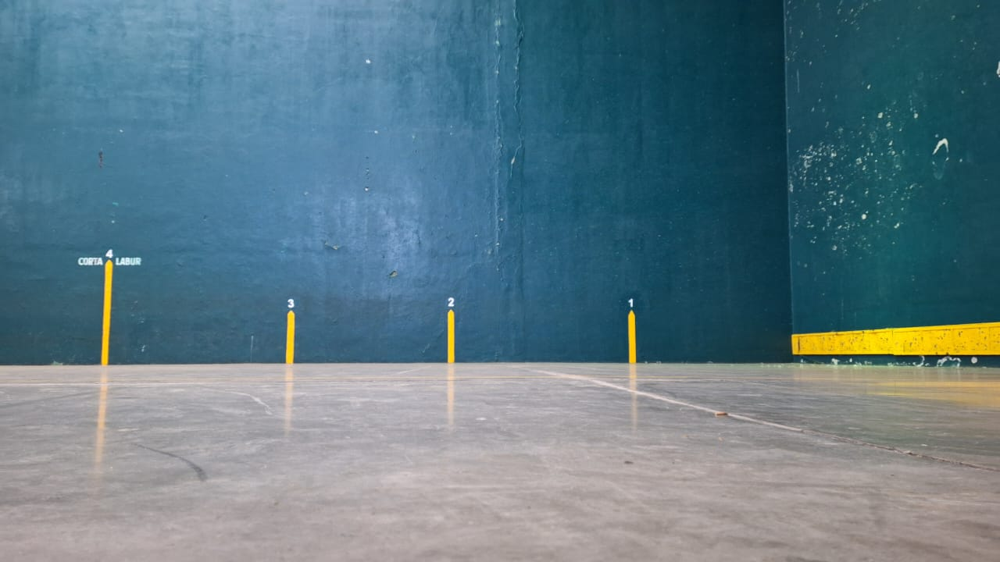

Sistema de detección estructural
Jevan-V es un sistema innovador para la detección temprana de fallas estructurales y riesgos sísmicos. Su objetivo es aumentar la seguridad en zonas urbanas y rurales mediante sensores de IMU, acelerómetros y vibración conectados a un módulo ESP32.
 



El sistema recopila datos en tiempo real y los envía a un servidor central para su análisis. De esta forma, se genera un monitoreo completo de la estructura, permitiendo tomar decisiones preventivas.